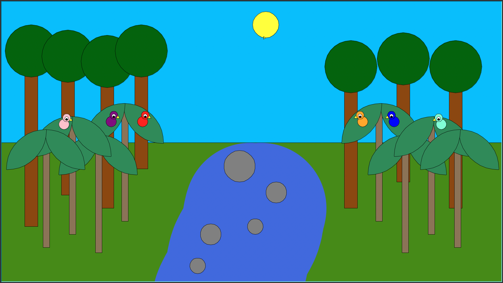

This project creates a vibrant jungle scene using Python’s Turtle graphics. I refactored the code to improve efficiency and reduce repetition by using helper functions for trees, parrots, rocks, and a winding river.
The following code is a refactored function that allows for the easy creation of multiple parrots in the scene. The only requirements are filling in the designated coordinates.
def draw_parrot(t, body_x, body_y, head_x, head_y, beak_x, beak_y,
eye_x, eye_y, color):
jump_to(t, body_x, body_y)
draw_circle(t, 20, color)
jump_to(t, head_x, head_y)
draw_circle(t, 15, color)
jump_to(t, beak_x, beak_y)
draw_triangle(t, 13, "yellow")
jump_to(t, eye_x, eye_y)
draw_circle(t, 7, "white")
jump_to(t, eye_x, eye_y)
draw_circle(t, 4, "black")

The scene combines tall and small trees with layered canopies, a winding river, colorful parrots perched around, and rocks scattered around the river.